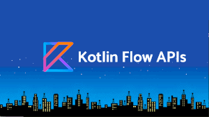
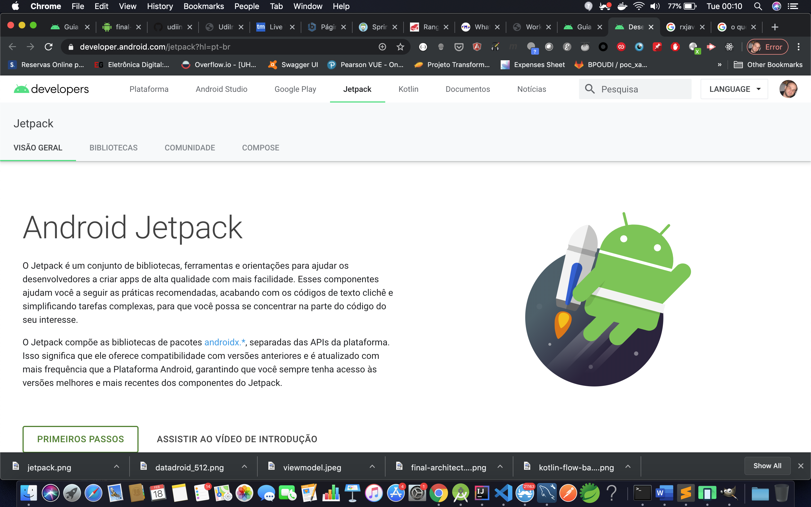
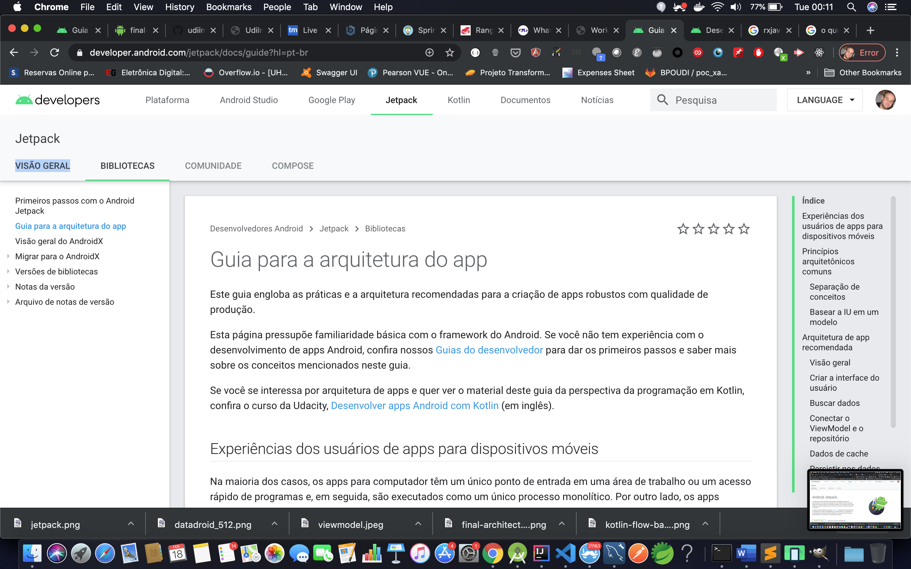
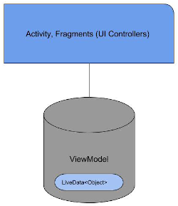

Workshop - Kotlin
Kotlin Coroutines e Flow com Arquitetura MVVM
Palestrante: Rogério Fontes / @rogeriofontes
Sobre o palestrante:
APAIXONADO EM MANEIRAS E FORMAS ÁGEIS DE CRIAR CÓDIGO FONTE. PROGRAMANDO SEMPRE TOMANDO UM BOM CAFÉ E ESCUTANDO UM BELO E PESADO ROCK`N ROLL. TRABALHA A MAIS DE 10 ANOS COM JAVA E LINUX, PASSANDO POR ANDROID, PYTHON, PHP E AGORA COM O CORAÇÃO NO ANGULAR.JS E NODE.JS. PROFESSOR UNIVERSITÁRIO DE REDES DE COMPUTADORES, JAVA E DISPOSITIVOS MÓVEIS. JUGLEADER E CO-FUNDADOR DO UAIJUG (GRUPO DE USUÁRIOS DO TRIÂNGULO MINEIRO) E DO TRIÂNGULO HACKERSPACE. ALÉM DISSO ESPECIALISTA DE SISTEMAS NO SOCIAL BANK E APAIXONADO POR ESTUDOS MÚSICAIS.

Android Jetpack
Android Jetpack é um conjunto de bibliotecas, ferramentas e orientações para ajudar os desenvolvedores a criar apps de alta qualidade com mais facilidade.

Android Jetpack
 https://developer.android.com/jetpack?hl=pt-brArquitetura de Referência Android Jetpack
 https://developer.android.com/jetpack/docs/guide?hl=pt-brLifecycle aware?

ViewModel
ViewModel é um componente que sobrevive ao processo de recriação das Activities. Toda Activity é reciada baseada nas novas configurações do sistema, recriando layout, estilos, etc. O ViewModel é usado em conjunto com outra bilioteca que também é Life-cycle-aware chamada LiveData.
ViewModel
O ViewModel faz nossa UI tenha apenas como objetivo renderizar e apresentar informações ao usuário. Os dados ficam armazenados na ViewModel que os expõem de maneira cautelosa (Lifecycle aware/consiente) e sempre de acordo com o ciclo de vida correto da aplicação.
Isso nos ajuda a garatir performasse e não temos vazamento de memoria.
ViewModel
As vantagens de utilizar o ViewModel são:
LiveData
LiveData é uma classe capaz de conter dados, para serem observados. A sua função é notificar o LifecycleOwner sobre alterações que ocorrem nos dados.
LiveData
A principal vantagem de se utilizar o LiveData junto com o ViewModel é que não haverá “vazamento de memória” (Memory leaks) quando houver alguma alteração no ciclo de vida do LifecycleOwner.
Android Room
Room é uma camada de abstração do SQLite e um dos componentes do jetpack do Android. Uma dos usos mais comuns de utilizar o room é armazenar dados relevantes em cache.
Android Room
É altamente recomendável usar o Room em vez do SQLite, porque o Room cuida de varios problemas comuns que temos no SQLite.
Retrofit
Retrofit é uma biblioteca open-source para consumo de APIs e para Networking de forma geral, com ela podemos criar requisições e utilizar nossa aplicação como um Client HTTP de forma rápida e simplificada.
Retrofit
Retrofit Configurado com conversores facilita a serialização de conjuntos de dados estruturados. Normalmente, para JSON, usamos conversores Gson para processos de serialização e desserialização.
O retrofit usa a biblioteca Okhttp para solicitações HTTP.
Koin
Uma estrutura de injeção de dependência leve e pragmática para desenvolvedores que usam Kotlin. Koin é uma alternativa bastante leve que outras estruturas mais robustas como Dagger(2), Guice e Spring
RxJava
RxJava é uma biblioteca que permite representar de forma declarativa, qualquer operação como um fluxo assíncrono de dados, que pode ser criado por qualquer thread, e consumido por múltiplos objetos em (opcionalmente) threads diferentes.
RxJava - onde usar?
RxJava - e no Android?
Flow APIs
No Kotlin, Coroutine é apenas a parte do scheduler do RxJava, mas agora as Flow API's, pode ser uma alternativa ao RxJava no Android
Flow APIs
Flow API in Kotlin é a melhor maneira de manipular Stream de dados de forma assíncrona que é executada sequencialmente.
Flow APIs
Em RxJava, os Observables é estrutura que representa um stream de itens. Seus dados não são executados até que seja assinado por subscriber e uma vez inscrito, o assinante começa a receber os itens de dados emitidos. Da mesma forma, o Flow funciona na condição em que o código dentro de um flow builder não é executado até que o flow seja coletado.
Builders in Flow
Flow builders nada mais são do que o caminho para construir Flows. Existe 4 tipos de flow builders
Flow APIs - flowOf()
É usado para criar um flow a partir de um determinado conjunto de valores.
flowOf(4, 2, 5, 1, 7).onEach { delay(400) }.flowOn(Dispatcher.Default)
Flow APIs - asFlow()
É uma extension function que ajuda a converter o tipo em fluxos.
(1..5).asFlow().onEach{ delay(300)}.flowOn(Dispatchers.Default)
Flow APIs - flow{}
Esta é uma builder function para construir fluxos arbitrários.
Flow APIs - channelFlow{}
Esse builder cria um cold-flow with com elementos enviando provided pelo próprio builder.
channelFlow {
(0..10).forEach {
send(it)
}
}.flowOn(Dispatchers.Default)
Flow APIs - Zip Operator
junta cs
CoroutineScope(Dispatchers.Main).launch {
flowOne.zip(flowTwo)
{ firstString, secondString ->
"$firstString $secondString"
}.collect {
Log.d(TAG, it)
}
}


Referências:
https://medium.com/android-dev-moz/aac5-9c56e6b4cffc
https://medium.com/@alifyzfpires/android-jetpack-viewmodel-primeiros-passos-fa46d7aae63a
https://developer.android.com/training/data-storage/room?hl=pt
http://www.kotlincodes.com/kotlin/retrofit-with-kotlin/
https://www.inovex.de/blog/five-reasons-why-you-should-use-koin-in-your-next-android-project/
https://medium.com/@stoltmanjan/what-is-up-with-koin-719d1248562c
https://medium.com/@nglauber/introdu%C3%A7%C3%A3o-ao-rx-java-com-kotlin-90c58d184c6b
https://blog.mindorks.com/what-is-flow-in-kotlin-and-how-to-use-it-in-android-project
https://ahsensaeed.com/introduction-new-kotlin-coroutine-flow-api/
https://blog.mindorks.com/what-is-flow-in-kotlin-and-how-to-use-it-in-android-project
https://ahsensaeed.com/introduction-new-kotlin-coroutine-flow-api/